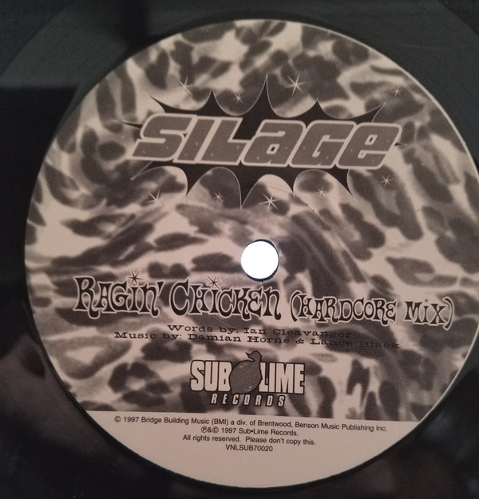
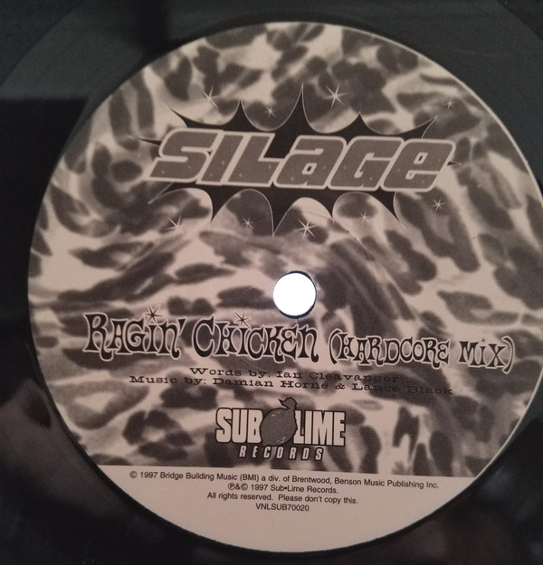

My Car Makes Me Sin Vinyl
"And I just want chicken and milk!"
[ Discography ] [ Archive ] [ Videos ] [ Bio ] [ About ]
My Car Makes Me Sin Vinyl
The My Car Makes Me Sin vinyl was released in 1997 as a limited printing of 250 available only through mail order from Silage management company Straight Up Music.

 

Track List:
Lance Black
Shane Black
- My Car Makes Me Sin
- Ragin' Chicken (Hardcore Mix)
Lance Black
Shane Black
More information available on Discogs.